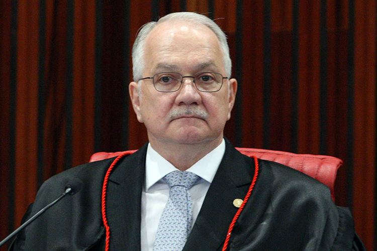

O ministro Edson Fachin propôs que os atos de abuso de poder religioso levem à perda de mandato a partir das eleições municipais deste ano.
Atualmente, apenas atos de abuso de poder econômico e político são elegíveis à perda de mandato. As informações foram divulgadas pela coluna ‘Radar’, da Veja.
Abuso de poder religioso se caracteriza quando um candidato usa igrejas ou templos religiosos a fim pedir votos para si.
A adoção de tese prospectiva resguarda a segurança jurídica e, ao mesmo tempo em que reconhece numa sociedade pluralista a legítima presença de vozes religiosas na esfera pública democrática, traduz limites à extorsão do consentimento eleitoral por meio de práticas abusivas do poder religioso”, afirmou Fachin.
O Tribunal Superior Eleitoral começou a julgar, nesta quinta-feira (25), a questão e ainda não obteve maioria. O julgamento ainda não foi concluído.
Em maio deste ano, no entanto, o Supremo Tribunal Federal (STF) liberou propaganda política, mesmo durante as eleições, em instituições de ensino público.
Por unanimidade, os ministros consideraram que ações de professores durante a campanha presidencial de 2018 favoráveis a Fernando Haddad, do PT, em detrimento de Jair Bolsonaro, então do PSL, não poderiam ter sido inibidas pelo risco de ferir a liberdade de cátedra e a livre manifestação de ideias.

Em outubro de 2018, coordenadores de cursos e professores fizeram aulas públicas em diversas universidades em que distribuíram folhetos a favor de Fernando Haddad, classificando Bolsonaro de fascista.
Em Campina Grande (PB), por exemplo, professores percorreram as salas de aula pedindo explicitamente o voto no número 13 (do PT) e difundiram informações falsas, como a de que as universidades federais passariam a cobrar mensalidades caso Bolsonaro vencesse. Na Universidade Federal da Grande Dourados (UFGD) foi realizada uma aula “pública” e “única” com o título “Esmagar o fascismo – o perigo do candidato Bolsonaro”.
Com informações, Gazeta do Povo
O assunto foi tema do Boletim da Manhã desta sexta-feira (26).